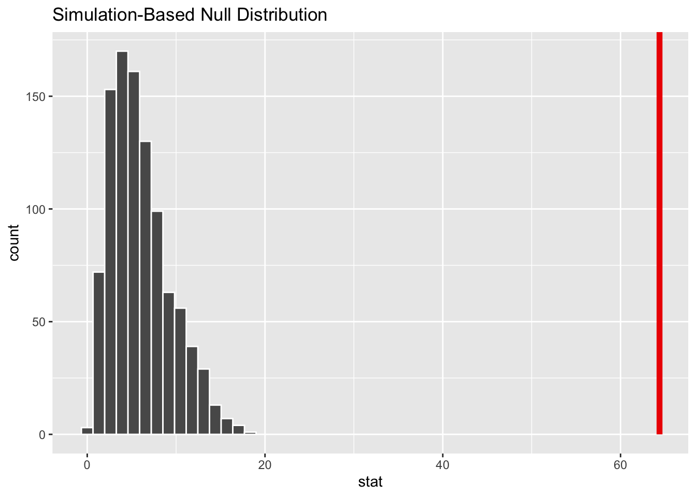

7 Testing relationships
In social sciences, our primary interest lies in understanding how certain variables vary across different groups. This session focuses primarily on bivariate relationships. When analyzing data, our objective often is to measure the association between two variables. For example, are men more likely to vote for radical right parties than women? Do autocratic regimes engage in warfare more frequently than democracies? Do individuals with more information tend to hold stronger beliefs in the reality of climate change than those without? In this context, we focus solely on relationships, not causality. Investigating causality would entail understanding the exact nature of the relationship and accounting for other variables that may influence this association.
When examining these relationships, our primary concern is statistical inference. Typically, our analysis is based on a sample taken from the population under study, meaning that our results are contingent on this specific sample. However, our ultimate goal is to make general statements or draw conclusions about the larger population. To determine whether the observed association in our data can be generalized, we need to conduct statistical tests. Our sample gives us an estimate of the “true” population relationship, and statistical tests assess how confident we can be that the association we observe is not simply due to sampling variability. By performing these statistical tests, we can make more reliable inferences about the broader population based on the sample we have analyzed.
We aim to determine whether the relationship observed in the data is real or merely the result of random chance. To do this, we formulate a null hypothesis: that the observed relationship is due to random chance. Typically, we seek to reject this null hypothesis and provide evidence for our alternative hypothesis that this effect is not random. To achieve this, we conduct a statistical test that yields a p-value: the probability of observing an association at least as strong as the one in our data if the null hypothesis were true.
To explore how to do this in R, we will use data from the 2022 French electoral study. This dataset was collected following the last French presidential election and contains variables on voting behavior. Before testing the relationship between different variables, I will cover various data wrangling steps that are often necessary before analyzing the data, such as joining data frames, recoding variables, and managing missing values.
7.1 Joining datasets
In many instances, we encounter data originating from different datasets that share common variables. In this context, I have two datasets concerning French voters. The first dataset is an annual survey that comprises information regarding the socio-demographic characteristics of the respondents. The second dataset is a panel survey conducted during the most recent presidential election, providing data about the voting choices of the respondents. Both datasets pertain to the same individuals and include a unique identifier (UID) that enables us to correlate the two datasets. Our objective is to amalgamate these two datasets into a single one that encompasses both the socio-demographic characteristics and the voting choices of the respondents. To accomplish this, we must merge the two datasets. Note that this is different from binding datasets together as we already did before with bind_rows() where we binded datasets having the same columns but not the same observations.
Let’s start by loading a bunch of packages we will use today and the two datasets I just described.
To join them together, we will use the left_join() function from the dplyr package. This function is used to combine two datasets by matching the values of one or more variables in each dataset. The first dataset is the one that we want to keep all the observations from. The second dataset is the one that we want to add observations from. In our case, we want to keep all the observations from the fes dataset and add the variables from the annual dataset. The by argument specifies the variable(s) that will be used to match observations in the two datasets. In our case, we will use the UID variable that is common to both datasets.
The left_join() function is indeed one of the most commonly used methods for joining data in R. However, it’s important to note that there are several other types of joins that can be applied, each with its own specific use case. If you’d like to delve deeper into how these joins work, I recommend checking out theR for data science book’s explanation of these concepts. These diagrams below shows the different types of joins that can be performed with the dplyr package.

If we check the names of our columns, we can now see that we have in our new dataset, the columns of both previous datasets with the same number of observations.
colnames(fes2022) [1] "UID" "fes4_Q01" "fes4_Q02a"
[4] "fes4_Q02b" "fes4_Q02c" "fes4_Q02d"
[7] "fes4_Q02e" "fes4_Q02f" "fes4_Q02g"
[10] "fes4_Q03" "fes4_Q04a" "fes4_Q04b"
[13] "fes4_Q04c" "fes4_Q04d" "fes4_Q04_DO_Q04a"
[16] "fes4_Q04_DO_Q04b" "fes4_Q04_DO_Q04c" "fes4_Q04_DO_Q04d"
[19] "fes4_Q05a" "fes4_Q05b" "fes4_Q05c"
[22] "fes4_Q05_DO_Q05a" "fes4_Q05_DO_Q05b" "fes4_Q05_DO_Q05c"
[25] "fes4_Q06" "fes4_Q07a" "fes4_Q07b"
[28] "fes4_Q07d" "fes4_Q07e" "fes4_Q07f"
[31] "fes4_Q07g" "fes4_Q07_DO_Q07a" "fes4_Q07_DO_Q07b"
[34] "fes4_Q07_DO_Q07c" "fes4_Q07_DO_Q07d" "fes4_Q07_DO_Q07e"
[37] "fes4_Q07_DO_Q07f" "fes4_Q07_DO_Q07g" "fes4_Q08a"
[40] "fes4_Q08b" "fes4_Q09" "fes4_Q10p1_a"
[43] "fes4_Q10p1_b" "fes4_Q10p2_a" "fes4_Q10p2_b"
[46] "fes4_Q10lh1_a" "fes4_Q10lh1_c" "fes4_Q11a"
[49] "fes4_Q11b" "fes4_Q11c" "fes4_Q12"
[52] "fes4_Q13" "fes4_Q14a" "fes4_Q14b"
[55] "fes4_Q14c" "fes4_Q14d" "fes4_Q15"
[58] "fes4_Q16a" "fes4_Q16b" "fes4_Q16c"
[61] "fes4_Q16d" "fes4_Q16e" "fes4_Q16f"
[64] "fes4_Q16g" "fes4_Q16h" "fes4_Q17a"
[67] "fes4_Q17b" "fes4_Q17c" "fes4_Q17d"
[70] "fes4_Q17e" "fes4_Q17f" "fes4_Q18a"
[73] "fes4_Q18b" "fes4_Q18c" "fes4_Q18d"
[76] "fes4_Q18e" "fes4_Q18f" "fes4_Q18g"
[79] "fes4_Q18h" "fes4_Q19" "fes4_Q22"
[82] "fes4_Q23a" "fes4_Q23b" "fes4_Q23c"
[85] "fes4_Q23d" "fes4_Q24" "fes4_Q25a"
[88] "fes4_Q25b" "fes4_Q26a" "fes4_Q26b"
[91] "fes4_Q27a" "fes4_Q27b" "fes4_Q27c"
[94] "fes4_Q27d" "fes4_bloc_q25_DO_Q25a" "fes4_bloc_q25_DO_Q25b"
[97] "fes4_bloc_q26_DO_Q26a" "fes4_bloc_q26_DO_Q26b" "cal_AGE"
[100] "cal_DIPL" "cal_SEXE" "cal_TUU"
[103] "cal_ZEAT" "cal_AGE1" "cal_AGE2"
[106] "cal_NAT" "cal_DIPL2" "panel"
[109] "VAGUE" "POIDS_fes4" "PDSPLT1_fes4"
[112] "PDSPLT2_fes4" "POIDS_INIT" "PDSPLT_INIT1"
[115] "PDSPLT_INIT2" "eayy_a1" "eayy_a2a_rec"
[118] "eayy_a2a_rec2" "eayy_a3_rec" "eayy_a3b_rec"
[121] "eayy_a3c_rec" "eayy_a3d" "eayy_a3e_rec"
[124] "eayy_a4" "eayy_a5" "eayy_a5c_rec"
[127] "eayy_b1" "eayy_b1_rev" "eayy_b1_sc"
[130] "eayy_b1_sccjt" "eayy_b10a" "eayy_b10aa"
[133] "eayy_b10acjt" "eayy_b11" "eayy_b11cjt"
[136] "eayy_b18_rec" "eayy_b18c" "eayy_b18ccjt"
[139] "eayy_b18cjt_rec" "eayy_b1a" "eayy_b1acjt"
[142] "eayy_b1b" "eayy_b1bcjt" "eayy_b1cjt"
[145] "eayy_b1cjt_rev" "eayy_b2_11a_rec" "eayy_b2_11acjt_rec"
[148] "eayy_b2_rec" "eayy_b25" "eayy_b25_rec"
[151] "eayy_b25cjt_rec" "eayy_b2cjt_rec" "eayy_b4_rec"
[154] "eayy_b4cjt_rec" "eayy_b5" "eayy_b5_rec"
[157] "eayy_b5a" "eayy_b5a_rec" "eayy_b5acjt"
[160] "eayy_b5c" "eayy_b5c_rec" "eayy_b5ccjt"
[163] "eayy_b5d_rec" "eayy_b6a_12a_rec" "eayy_b6a_rec"
[166] "eayy_b6b_12b_rec" "eayy_b6b_rec" "eayy_b7b_rec"
[169] "eayy_b8_rec" "eayy_b8cjt_rec" "eayy_c1_rec"
[172] "eayy_c1jeu" "eayy_c8" "eayy_c8a_rec"
[175] "eayy_c8b_rec" "eayy_d1" "eayy_d1_rec"
[178] "eayy_d2" "eayy_d2_rev" "eayy_d3"
[181] "eayy_d4_rec" "eayy_d5_rec" "eayy_d6"
[184] "eayy_d7_1" "eayy_d7_10" "eayy_d7_2"
[187] "eayy_d7_3" "eayy_d7_4" "eayy_d7_5"
[190] "eayy_d7_6" "eayy_d7_7" "eayy_d7_8"
[193] "eayy_d7_9" "eayy_d7_rev_1" "eayy_d7_rev_10"
[196] "eayy_d7_rev_11" "eayy_d7_rev_2" "eayy_d7_rev_3"
[199] "eayy_d7_rev_4" "eayy_d7_rev_5" "eayy_d7_rev_6"
[202] "eayy_d7_rev_7" "eayy_d7_rev_8" "eayy_d7_rev_9"
[205] "eayy_e1a_rec" "eayy_e1b_rec" "eayy_e1c_rec"
[208] "eayy_e1d_rec" "eayy_e1e_rec" "eayy_e1f"
[211] "eayy_e1f1_rec" "eayy_e1f2_rec" "eayy_e1g_rec"
[214] "eayy_e1h_rec" "eayy_e1i_rec" "eayy_e1j_rec"
[217] "eayy_e2a_rec" "eayy_e2auc" "eayy_e2auc_source"
[220] "eayy_e3a" "eayy_e3b" "eayy_e3c"
[223] "eayy_e3d" "eayy_e3e" "eayy_e4"
[226] "eayy_e5" "eayy_e6" "eayy_f1_rec"
[229] "eayy_f1_rev" "eayy_f1a1" "eayy_f3"
[232] "eayy_f3_rev" "eayy_f4" "eayy_f6_rec"
[235] "eayy_f6a" "eayy_f7" "eayy_f7_1"
[238] "eayy_f7_10" "eayy_f7_11" "eayy_f7_12"
[241] "eayy_f7_13" "eayy_f7_14" "eayy_f7_15"
[244] "eayy_f7_2" "eayy_f7_3" "eayy_f7_4"
[247] "eayy_f7_5" "eayy_f7_6" "eayy_f7_8"
[250] "eayy_f7_9" "eayy_f7bis_1" "eayy_f7bis_10"
[253] "eayy_f7bis_11" "eayy_f7bis_12" "eayy_f7bis_13"
[256] "eayy_f7bis_14" "eayy_f7bis_2" "eayy_f7bis_3"
[259] "eayy_f7bis_4" "eayy_f7bis_5" "eayy_f7bis_6"
[262] "eayy_f7bis_7" "eayy_f7bis_8" "eayy_f7bis_9"
[265] "eayy_f8" "eayy_f9" "eayy_g1"
[268] "eayy_g1_1" "eayy_g1_2" "eayy_g10"
[271] "eayy_g2" "eayy_g3a" "eayy_g3b"
[274] "eayy_g3c" "eayy_g3d" "eayy_g4"
[277] "eayy_g5" "eayy_g6_1" "eayy_g6_2"
[280] "eayy_g6_3" "eayy_g6_4" "eayy_h_c11"
[283] "eayy_h_teo1" "eayy_h1a" "eayy_h4"
[286] "eayy_i1" "eayy_i13a" "eayy_i13b"
[289] "eayy_i2" "eayy_i8" "eayy_j1"
[292] "eayy_k3" "eayy_pcs18" "eayy_pcs6"
[295] "eayy_pcs6cjt" "eayy_typmen5" 7.2 Renaming variables
Our examination of the column names also reveals that the variable names are not particularly informative. It can be challenging to discern the specific information represented by each variable. Today, I am interested in the relationship between education levels and voting behavior in the second round of the election. So I rename these two variables with more informative names. I also rename other variables on sympathy towards candidates that I will use late.
fes2022 <- fes2022 |>
rename(
gender = cal_SEXE, # Gender variable
education = cal_DIPL, # Education variable
vote_t2 = fes4_Q10p2_b, # Vote at the second round of the election
symp_macron = fes4_Q17a, # Sympathy towards Macron
symp_lepen = fes4_Q17d, # Sympathy towards Le Pen (Far right)
symp_zemmour = fes4_Q17b, # Sympathy towards Zemmour (Far right)
symp_melenchon = fes4_Q17c, # Sympathy towards Mélenchon (Radical left)
symp_jadot = fes4_Q17f # Sympathy towards Jadot (Greens)
)7.3 Recoding variables
In addition to renaming variables, we may also need to recode variables. Let’s look at these two variables. Education is coded in four different categories but the actual values are numbers from 1 to 4 and we migh want a categorical variable with the labels instead. Moreoever, I also want to change the order of the categories to have the less educated people first and the more educated people last.
fes2022 |>
count(education)# A tibble: 4 × 2
education n
<dbl+lbl> <int>
1 1 [Diplôme supérieur] 829
2 2 [BAC et BAC+2] 286
3 3 [CAP + BEPC] 352
4 4 [Sans diplôme et non déclaré] 108fes2022 <- fes2022 |>
mutate(
# Convert the education variable values by their labels
education = unlabelled(education) |>
# Change the order of the categories
fct_relevel(
"Sans diplôme et non déclaré",
"CAP + BEPC",
"BAC et BAC+2",
"Diplôme supérieur"
)
)
fes2022 |>
count(education)# A tibble: 4 × 2
education n
<fct> <int>
1 Sans diplôme et non déclaré 108
2 CAP + BEPC 352
3 BAC et BAC+2 286
4 Diplôme supérieur 829Our vote variable at the second round is also coded with values from 1 to 4. We might want to recode it to have the names of the candidates instead of numbers, and to have a single category for the people who did not cast a valid vote.
fes2022 |>
count(vote_t2)# A tibble: 5 × 2
vote_t2 n
<dbl+lbl> <int>
1 1 [Marine Le Pen, Rassemblement national (RN)] 270
2 2 [Emmanuel Macron, La République en marche (LREM)] 808
3 3 [Vous avez voté blanc] 164
4 4 [Vous avez voté nul] 39
5 NA(a) 294# Recode vote_t2
fes2022 <- fes2022 |>
mutate(
# Create a new variable called candidate_t2
candidate_t2 = case_when(
# When vote_t2 is 1, assign the value "Le Pen"
vote_t2 == 1 ~ "Le Pen",
# When vote_t2 is 2, assign the value "Macron"
vote_t2 == 2 ~ "Macron",
# When vote_t2 is 3 or 4, assign the value "No valid vote"
vote_t2 %in% c(3, 4) ~ "No valid vote"
)
)
fes2022 |>
count(vote_t2)# A tibble: 5 × 2
vote_t2 n
<dbl+lbl> <int>
1 1 [Marine Le Pen, Rassemblement national (RN)] 270
2 2 [Emmanuel Macron, La République en marche (LREM)] 808
3 3 [Vous avez voté blanc] 164
4 4 [Vous avez voté nul] 39
5 NA(a) 2947.4 Dealing with Nas
In the last code chunk, it became evident that our “vote” variable contains a considerable number of missing values Before we go further, I want to take a moment to discuss how to deal with missing values. Initially, it’s advisable to obtain an overview of the extent of missing values within our dataset.
We see that we actually have a lot of missing values. This is because some of the variables are only asked to a subset of the respondents. There are several ways to deal with it depending on what you want to do :
- Removing Nas
- Converting values to Nas
- Replacing Nas
First, in some instances, we might want to consider to remove all of the observations that have Nas. You can do that by using tidyr::drop_na() on the whole dataset. But be careful with this ! You might lose a lot of information. Here, we actually end up with 0 observations because all of our observations have missing values in at least one variable.
Then, we might want to convert some values to Nas. We can do that by using the dplyr::na_if() function. Here, for instance, I have a variable symp_macron containing information on sympathy towards Emmanuel Macron. The value 96 corresponds to “I don’t know him”. The problem with keeping this value is that it is not a missing value and it will be included in the analysis. For instance, if I compute a mean on this variable, the value 96 will be included in the computation.
fes2022 |> count(symp_macron)# A tibble: 13 × 2
symp_macron n
<dbl+lbl> <int>
1 0 [Je n'aime pas du tout cette personnalité 0] 308
2 1 [1] 89
3 2 [2] 98
4 3 [3] 109
5 4 [4] 105
6 5 [5] 202
7 6 [6] 135
8 7 [7] 170
9 8 [8] 155
10 9 [9] 78
11 10 [J'aime beaucoup cette personnalité 10] 101
12 96 [Je ne connais pas cette personnalité] 6
13 NA(a) 19mean(fes2022$symp_macron, na.rm = TRUE)[1] 4.865039To avoid this, we can convert the value 96 to NA with na_if(). As we can see, the value 96 is now considered as a missing value and is not included in the computation of the mean that is now 4.51.
fes_recoded <- fes2022 |>
mutate(symp_macron = na_if(symp_macron, 96))
fes_recoded |> count(symp_macron)# A tibble: 12 × 2
symp_macron n
<dbl+lbl> <int>
1 0 [Je n'aime pas du tout cette personnalité 0] 308
2 1 [1] 89
3 2 [2] 98
4 3 [3] 109
5 4 [4] 105
6 5 [5] 202
7 6 [6] 135
8 7 [7] 170
9 8 [8] 155
10 9 [9] 78
11 10 [J'aime beaucoup cette personnalité 10] 101
12 NA 25mean(fes_recoded$symp_macron, na.rm = TRUE)[1] 4.512258You can also automate this with the mutate_at() function. Here, I convert all of the values 96 in the variables starting with “symp” to NAs.
# Automation on all of the candidates
fes2022 <- fes2022 |>
mutate_at(vars(starts_with("symp")), ~na_if(., 96))Finally, we might want to replace Nas with other values. For instance the vote for the secound round variable has missing values as some people did not vote or refused to answer. I might want to keep those values and replace them by another value. Here I decide to code them as well as “No valid vote” which will contains all of the people that did not cast a valid vote (Macron or Le Pen). We can do that by using the tidyr::replace_na() function.
fes2022 |>
count(candidate_t2)# A tibble: 4 × 2
candidate_t2 n
<chr> <int>
1 Le Pen 270
2 Macron 808
3 No valid vote 203
4 <NA> 294fes2022 <- fes2022 |>
mutate(candidate_t2 = replace_na(candidate_t2, "No valid vote"))
fes2022 |>
count(candidate_t2)# A tibble: 3 × 2
candidate_t2 n
<chr> <int>
1 Le Pen 270
2 Macron 808
3 No valid vote 497If you want to delve deeper into the topic of missing values, I recommend you to read this. Also, note that there are other ways to deal with missing values. For instance, you can use imputation techniques to replace missing values by plausible values.
7.5 Relationships between two categorical variables : χ² test
Let’s look a the relatiohship between two variables : education and voting choice at the second round of the 2022 presidential election. We want to know if there is a relationship between these two variables. We can then formulate the following hypotheses :
H0 (null hypothesis) : There is NO relationship between education levels and voting choice
H1 : There is a relationship between education levels and voting choice
To look at the plausible relationship between these two variables, we can create a contingency table (or crosstab). Here I use thejanitor::tabyl() function. But you can also use the table() function from base R. These table show the distribution of voting choice for each level of education.
# Create a contingency table
fes2022 |>
tabyl(candidate_t2, education) candidate_t2 Sans diplôme et non déclaré CAP + BEPC BAC et BAC+2
Le Pen 29 89 50
Macron 39 141 133
No valid vote 40 122 103
Diplôme supérieur
102
495
232# Format the table to add totals and percentages
contingency_table <- fes2022 |>
tabyl(candidate_t2, education) |> # Create a contingency table
adorn_totals("row") |> # Add totals as last row
adorn_totals("col") |> # Add totals as last column
adorn_percentages() |> # Convert to percentages
adorn_pct_formatting(digits = 1) |>
adorn_ns()
contingency_table candidate_t2 Sans diplôme et non déclaré CAP + BEPC BAC et BAC+2
Le Pen 10.7% (29) 33.0% (89) 18.5% (50)
Macron 4.8% (39) 17.5% (141) 16.5% (133)
No valid vote 8.0% (40) 24.5% (122) 20.7% (103)
Total 6.9% (108) 22.3% (352) 18.2% (286)
Diplôme supérieur Total
37.8% (102) 100.0% (270)
61.3% (495) 100.0% (808)
46.7% (232) 100.0% (497)
52.6% (829) 100.0% (1,575)# Alternative way with base R
table(fes2022$candidate_t2, fes2022$education) # Create a contingency table
Sans diplôme et non déclaré CAP + BEPC BAC et BAC+2
Le Pen 29 89 50
Macron 39 141 133
No valid vote 40 122 103
Diplôme supérieur
Le Pen 102
Macron 495
No valid vote 232prop.table(table(fes2022$candidate_t2, fes2022$education), 1)
Sans diplôme et non déclaré CAP + BEPC BAC et BAC+2
Le Pen 0.10740741 0.32962963 0.18518519
Macron 0.04826733 0.17450495 0.16460396
No valid vote 0.08048290 0.24547284 0.20724346
Diplôme supérieur
Le Pen 0.37777778
Macron 0.61262376
No valid vote 0.46680080From this table, we can already see that the vote choice vary across education level. The total shows us what would be the distribution of voting choice if there was no relationship between education and voting choice. But we can see that voters with higher education have voted more for Macron than for Le Pen and that the opposite is true for voters with lower education. But is this difference statistically significant or does it reflect sampling error ?
To test this, we need to compute a test statistic. As we ar dealing with two categorical variables, we will use a χ² test. This test is used to test the relationship between two categorical variables by comparing the observed distribution of our values to their expected distribution if there was no relationship between the two variables. To do this in R, we can use the chisq.test() function. By default, the significance level is set at 0.05.
test_educ <- chisq.test(fes2022$candidate_t2, fes2022$education)
test_educ
Pearson's Chi-squared test
data: fes2022$candidate_t2 and fes2022$education
X-squared = 64.386, df = 6, p-value = 5.757e-12This gives us several informations :
- The X-squared value, which is our test statistic. It is computed by comparing the observed values to the expected values. You can access them with
broom::augment(). Expected values are the values that we would expect if there was no relationship between the two variables. They are computed by multiplying the row total by the column total and dividing by the grand total. Ex, for Le Pen and less educated : 270*108/1575 = 18.51. If there was no relationship between education and voting choice, we would expect about 18.5 people without a diploma to vote for Le Pen, and we observe 29.
augmented_test <- augment(test_educ)
augmented_test# A tibble: 12 × 9
fes2022.candidate_t2 fes2022.education .observed .prop .row.prop .col.prop
<fct> <fct> <int> <dbl> <dbl> <dbl>
1 Le Pen Sans diplôme et no… 29 0.0184 0.107 0.269
2 Macron Sans diplôme et no… 39 0.0248 0.0483 0.361
3 No valid vote Sans diplôme et no… 40 0.0254 0.0805 0.370
4 Le Pen CAP + BEPC 89 0.0565 0.330 0.253
5 Macron CAP + BEPC 141 0.0895 0.175 0.401
6 No valid vote CAP + BEPC 122 0.0775 0.245 0.347
7 Le Pen BAC et BAC+2 50 0.0317 0.185 0.175
8 Macron BAC et BAC+2 133 0.0844 0.165 0.465
9 No valid vote BAC et BAC+2 103 0.0654 0.207 0.360
10 Le Pen Diplôme supérieur 102 0.0648 0.378 0.123
11 Macron Diplôme supérieur 495 0.314 0.613 0.597
12 No valid vote Diplôme supérieur 232 0.147 0.467 0.280
# ℹ 3 more variables: .expected <dbl>, .resid <dbl>, .std.resid <dbl># Compute chi2 value
chi2_value <- sum((augmented_test$.observed - augmented_test$.expected)^2 / augmented_test$.expected)
chi2_value[1] 64.38626We use the conventional significance level of 0.05: we reject the null hypothesis if the p-value is below 0.05. The p-value is the probability of observing a test statistic as extreme or more extreme than the one we observed if the null hypothesis is true. It is computed from the X-squared value and the degrees of freedom of the χ² distribution. Here, the p-value is 5.757e-12, which is equivalent to 0.000000000005757. This means that if there was no relationship between education and voting choice in the population, we would observe an association at least this strong in our sample only 0.0000000005757% of the time. So we can reject the null hypothesis and conclude that there is a statistically significant relationship between education and voting choice.
Using the infer package, we can also visualize how far is our observed statistic from the distribution of statistics under the null hypothesis.
# calculate the observed statistic
observed_indep_statistic <- fes2022 |>
specify(candidate_t2 ~ education) |>
hypothesize(null = "independence") |>
calculate(stat = "Chisq")
# calculate the null distribution
null_dist_sim <- fes2022 |>
drop_na(candidate_t2) |>
specify(candidate_t2 ~ education) |>
hypothesize(null = "independence") |>
generate(reps = 1000, type = "permute") |>
calculate(stat = "Chisq")
# Visualize the null distribution and shade the observed statistic
null_dist_sim |>
visualize() +
shade_p_value(observed_indep_statistic,
direction = "greater")
7.6 Relationship between a categorical and a continuous variable : t-test
Thus far, we have examined the relationship between two categorical variables. However, there are instances when we are interested in assessing how various groups vary in terms of their values on a continuous variable. For this, we can use a t-test, which is a statistical test that allows us to compare the means of two groups. The t-test is used to test the null hypothesis that there is no difference between the means of the two groups. The alternative hypothesis is that there is a difference between the means of the two groups. Our goal is to reject the null hypothesis.
Here, I want to know whether men and women tend to have different levels of sympathy towards far right candidates.
H0 : There is no difference between gender in terms of sympathy towards far right candidates.
H1 : There is a difference between gender in terms of sympathy towards far right candidates.
fes2022 |>
count(symp_zemmour)# A tibble: 12 × 2
symp_zemmour n
<dbl+lbl> <int>
1 0 [Je n'aime pas du tout cette personnalité 0] 1049
2 1 [1] 128
3 2 [2] 95
4 3 [3] 60
5 4 [4] 39
6 5 [5] 62
7 6 [6] 33
8 7 [7] 28
9 8 [8] 15
10 9 [9] 11
11 10 [J'aime beaucoup cette personnalité 10] 26
12 NA(a) 29fes2022 |>
count(symp_lepen)# A tibble: 12 × 2
symp_lepen n
<dbl+lbl> <int>
1 0 [Je n'aime pas du tout cette personnalité 0] 826
2 1 [1] 155
3 2 [2] 108
4 3 [3] 74
5 4 [4] 45
6 5 [5] 102
7 6 [6] 51
8 7 [7] 50
9 8 [8] 47
10 9 [9] 16
11 10 [J'aime beaucoup cette personnalité 10] 83
12 NA(a) 18fes2022 |>
count(gender)# A tibble: 2 × 2
gender n
<dbl+lbl> <int>
1 1 [Homme] 747
2 2 [Femme] 828# Recode gender
fes2022 <- fes2022 |>
mutate(
gender = unlabelled(gender)
)
fes2022 |>
count(gender)# A tibble: 2 × 2
gender n
<fct> <int>
1 Homme 747
2 Femme 828# Compute the mean
fes2022 |>
group_by(gender) |>
summarise(
n = n(),
mean_symp_zemmour = mean(symp_zemmour, na.rm = TRUE),
mean_symp_lepen = mean(symp_lepen, na.rm = TRUE)
)# A tibble: 2 × 4
gender n mean_symp_zemmour mean_symp_lepen
<fct> <int> <dbl> <dbl>
1 Homme 747 1.49 2.14
2 Femme 828 0.916 2.08We can test this statistically by using a t.test that will tell us if the difference in means between the two groups is statistically significant. To do so, we use the t.test() function that takes as input the two variables we want to compare with a ~ in between and the data where it comes from. Here, we want to compare sympathy towards Marine Le Pen between men and women. So, we put the symp_lepen variable on the left of the ~ and the gender variable on the right.
test_lepen <- t.test(fes2022$symp_lepen ~ fes2022$gender)
test_lepen
Welch Two Sample t-test
data: fes2022$symp_lepen by fes2022$gender
t = 0.39194, df = 1553.9, p-value = 0.6952
alternative hypothesis: true difference in means between group Homme and group Femme is not equal to 0
95 percent confidence interval:
-0.2421654 0.3631108
sample estimates:
mean in group Homme mean in group Femme
2.144011 2.083538 The t-value is our test statistic. It is computed by comparing the difference between the two means to the variability within the groups. The closer the t-value is to 0, the more similar the two groups are. By default, t.test() runs a Welch t-test, which does not assume that the two groups have the same variance. Its degrees of freedom are estimated from the data (here 1553.9), which is why they are not a whole number. The formula df = n1 + n2 - 2 only applies to the classic Student t-test, which you get with var.equal = TRUE. The p-value is the probability of observing a test statistic as extreme or more extreme than the one we observed if the null hypothesis is true. Based on this critical value and the t-value, the t-table gives us that p-value. Here, the p-value is 0.6952 This means that if there was no difference between the two groups in the population, we would observe a difference at least as large as the one in our sample 69.52% of the time. So we cannot reject the null hypothesis: there is no statistically significant difference between men and women in terms of sympathy towards Marine Le Pen. Note that this does not prove that there is no difference in the population, only that our data do not provide evidence of one.
test_zemmour <- t.test(fes2022$symp_zemmour ~ fes2022$gender)
test_zemmour
Welch Two Sample t-test
data: fes2022$symp_zemmour by fes2022$gender
t = 4.8889, df = 1405.6, p-value = 1.13e-06
alternative hypothesis: true difference in means between group Homme and group Femme is not equal to 0
95 percent confidence interval:
0.3409936 0.7980112
sample estimates:
mean in group Homme mean in group Femme
1.4851351 0.9156328 The p-value is 1.13e-06. This means that if there were no difference between the two groups in the population (H0), we would observe a difference at least as large as the one in our sample only 0.000113% of the time. Therefore, we can reject the null hypothesis and conclude that there is a statistically significant difference between the two groups, as the p-value is well below our significance level of 0.05.
While there are no statistically significant differences between women and men in terms of sympathy towards Marine Le Pen, there is a statistically significant difference between women and men regarding sympathy towards Eric Zemmour. Men tend to be more sympathetic towards Eric Zemmour than women.
8 Your turn
- Is there a statistically significant difference between gender and the level of other candidates ?
- Is there a statistically significant difference between gender and voting choice at the second round ?